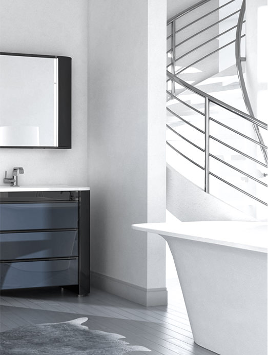

<div class="popup popup-instruction">
	<form class="form" action="" method="post">
		
		
		<div class="block-item">
			<div class="pic"></div>
			<div class="text">
				<p class="h3">Инструкции <br>по эксплуатации</p>
				<div class="hr hr-black">
					<div class="bg"></div>
				</div>
				<p>В современном, быстро меняющемся мире назрела необходимость в материале, способном удовлетворить самые широкие запросы потребителя - от классики до авангарда, в широкой цветовой гамме, материале, который нашел применение в самых широких отраслях производства: от строительства до медицины.</p>
				<p class="h5">Ванны Atra-form</p>
				<ul class="list">
					<li>6 водяных форсунок (Анастасия, Олимп 8 форсунок) с регулировкой направления струй.</li>
					<li>Кнопка пневмоуправления на борту ванной (1-е нажатие включение помпы, 2-е выключение)</li>
					<li>Регулятор интенсивности массажа на борту ванной (за счет инжекционного подмешивания воздушного потока усиливает массажный эффект и имеет плавную регулировку).</li>
				</ul>
				<p class="h5">Мебель для ванных комнат Atra-form</p>
				<ul class="list">
					<li>6 водяных форсунок (Анастасия, Олимп 8 форсунок) с регулировкой направления струй.</li>
					<li>Электронное управление (включение/выключение помпы и подводной подсветки происходит общим электронным блоком управления и сенсорным пультом):</li>
					<li>&nbsp;&nbsp;&nbsp;&nbsp;&nbsp;Однокнопочный сенсорный пульт управления на борту ванной. ( 1-е нажатие кнопки включение, 2-е интервал (при наличии функции), 3-е выключение).</li>
					<li>&nbsp;&nbsp;&nbsp;&nbsp;&nbsp;Система сухой защиты (ССЗ) (предотвращает возможность включения гидромассажа без воды).</li>
					<li>&nbsp;&nbsp;&nbsp;&nbsp;&nbsp;Импульсный режим (при включенном DIP-выключателе S2 в интервальном режиме оборудование включается и выключается в 2-х секундном ритме).</li>
					<li>&nbsp;&nbsp;&nbsp;&nbsp;&nbsp;Автоматическая досушка (при включенной функции через 20 минут после того, как датчик (ССЗ) перестал регистрировать наличие воды, происходит включение оборудования на 3 минуты).</li>
					<li>Регулятор интенсивности массажа на борту ванной (за счет инжекционного подмешивания воздушного потока усиливает массажный эффект и имеет плавную регулировку).</li>
				</ul>
				<span class="like"><span class="icon">&hearts;</span> 567</span>
			</div>
		</div>
		<div class="prev-next">
			<div class="pic" style="background-image:url('img/temp/prevnext/_prevnext-13.jpg')"></div>
			<p class="look"><a class="parallel fancybox-popup" href="./popup-warranty.html" data-fancybox-type="ajax">Гарантийные обязательства</a></p>
		</div>
	</form>
</div>